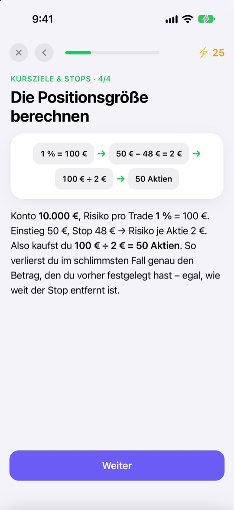

Risikomanagement
Positionsgröße berechnen: Die 1-Prozent-Regel erklärt
Wie viel du bei einem Fehltrade verlierst, entscheidet nicht der Einstieg, sondern die Positionsgröße. So rechnen Profis sie in drei Schritten aus.

Zwei Trader kaufen dieselbe Aktie zum selben Kurs mit demselben Stop. Der eine verliert beim Fehltrade 100 €, der andere 1.000 €. Der Unterschied liegt allein in der Positionsgröße, also in der Frage, wie viele Aktien du kaufst.
Die Formel
Die Positionsgröße hängt von zwei Dingen ab: wie viel du pro Trade höchstens verlieren willst und wie weit dein Stop vom Einstieg entfernt ist.
Rechenbeispiel
- Dein Konto hat 10.000 €. Du riskierst pro Trade 1 %, also 100 €.
- Du steigst bei 50 € ein, dein Stop liegt bei 48 €. Das Risiko pro Aktie beträgt 2 €.
- Stückzahl: 100 € ÷ 2 € = 50 Aktien.
In der Position stecken damit 2.500 €, also ein Viertel deines Kontos. Riskiert sind aber nur 100 €, weil der Stop den Verlust begrenzt. Diese Unterscheidung zwischen Positionswert und Risiko ist der Kern der Regel.
Warum gerade 1 Prozent?
Verlustserien gehören dazu, auch bei guten Strategien. Die Tabelle zeigt, was zehn Verluste in Folge mit einem Konto von 10.000 € machen, je nachdem, wie viel pro Trade riskiert wird:
| Risiko pro Trade | Konto nach 10 Verlusten | Minus | Nötiges Plus zum Ausgleich |
|---|---|---|---|
| 1 % | 9.044 € | −9,6 % | +10,6 % |
| 2 % | 8.171 € | −18,3 % | +22,4 % |
| 5 % | 5.987 € | −40,1 % | +67,0 % |
| 10 % | 3.487 € | −65,1 % | +186,8 % |
Mit 1 % übersteht das Konto eine schwarze Serie fast unbeschadet. Mit 10 % musst du danach fast verdreifachen, nur um wieder bei null zu stehen. Viele Trader riskieren deshalb zwischen 0,5 und 2 % pro Trade.
Was die Regel nicht abdeckt
- Kurslücken: Eröffnet eine Aktie unter deinem Stop, wird zum nächsten möglichen Kurs verkauft. Der Verlust kann größer sein als geplant. Mehr dazu im Artikel über Kurslücken.
- Kosten: Ordergebühren und Spread kommen zum Risiko hinzu.
- Mehrere Positionen gleichzeitig: Fünf Trades in derselben Branche verhalten sich oft wie ein einziger großer Trade.
- Sehr enge Stops: Bei 10 Cent Abstand würde die Formel riesige Stückzahlen ergeben. Viele setzen deshalb zusätzlich eine Obergrenze für den Positionswert.
Positionsgröße und Chance-Risiko-Verhältnis
Die Positionsgröße legt fest, wie viel du verlierst, wenn du falsch liegst. Ob sich ein Trade überhaupt lohnt, zeigt das Chance-Risiko-Verhältnis. Erst beides zusammen ergibt einen Plan: Stop und Ziel festlegen, CRV prüfen, Stückzahl berechnen, dann einsteigen. Wie ein vollständiger Plan aussieht, zeigt der Artikel Trading lernen.
Für langfristige Anleger mit Sparplan oder ETF gilt die Regel so nicht, weil dort meist ohne Stop investiert wird. Die Grundidee, das Risiko vorher zu begrenzen, hilft aber auch dort, etwa bei der Frage, wie viel Geld überhaupt in Aktien fließen soll. Wie langfristiges Anlegen funktioniert, erklärt der Artikel Investieren lernen.
Häufige Fragen
Muss es genau 1 % sein?
Nein. Viele Trader riskieren 0,5 bis 2 % pro Trade. Wichtig ist, dass der Wert vorher feststeht und klein genug ist, um eine Verlustserie zu überstehen.
Was ist der Unterschied zwischen Positionswert und Risiko?
Der Positionswert ist das Geld, das in der Aktie steckt. Das Risiko ist der Betrag, den du verlierst, wenn der Stop greift. Im Beispiel stecken 2.500 € in der Position, riskiert sind 100 €.
Was passiert bei einer Kurslücke unter den Stop?
Dann wird zum nächsten möglichen Kurs verkauft, und der Verlust kann größer sein als geplant. Deshalb sollte das Risiko pro Trade klein bleiben.
Dieser Artikel dient der Bildung und ist keine Anlageberatung. Beispiele sind vereinfacht und ohne Steuern dargestellt.